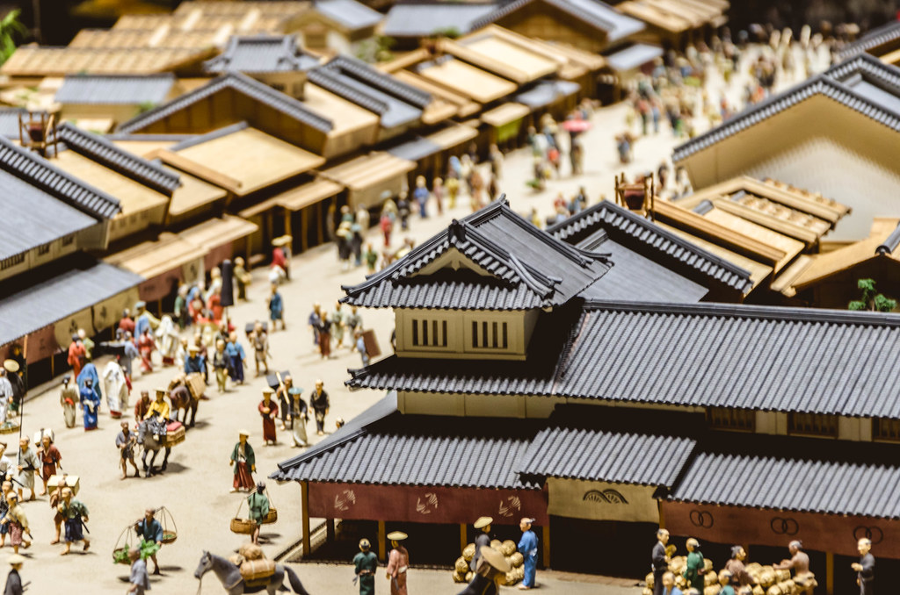

History
Tokyo, formerly known as Edo (until 1868) is the capital city of Japan. The land at which Tokyo lies has been inhabited for hundreds of years. The village of Edo did not develop into a city until the Tokugawa period (1603-1867). Along with the Meiji restoration in 1868 the capital city of Japan was moved to Edo and was at the same time renamed to Tokyo. The word Tokyo means “eastern capital” which describes the city's whereabouts well. Edo has been the largest city in all of Japan since the 17th century and in the 19th century Japan's population crossed the one million mark. With Tokyo being the economic, political and cultural center of Japan it has become one of the most populous cities in the 20th century.